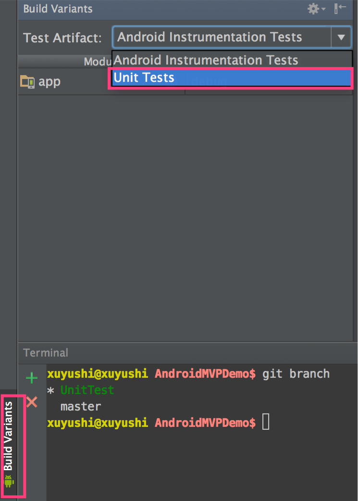
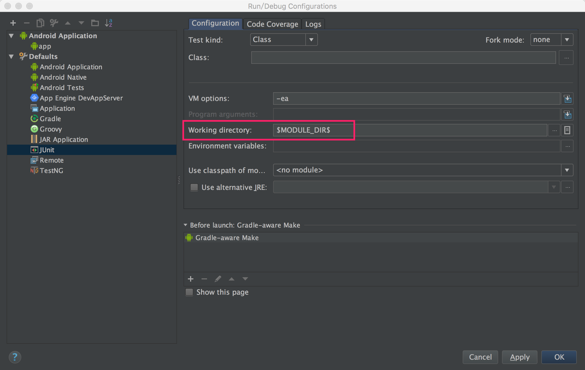
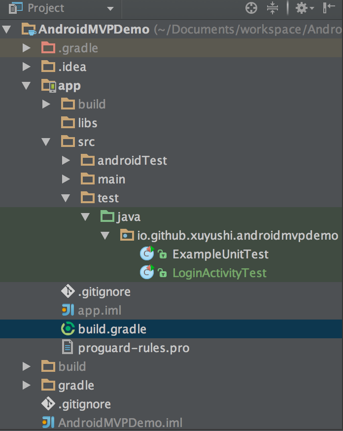

[TOC]

robolectric的最大特别是运行测试程序时不需要设备或者模拟器，在电脑中进行就可以了，自然测试程序的运行效率可以大大提升。
环境搭建
gradle
gradle 中加入
dependencies {
...
testCompile 'junit:junit:4.10'
testCompile 'org.robolectric:robolectric:3.0'
}
注意
- 若写成
testCompile，则测试代码放在 test 文件夹中 - 若写成
androidTest，则测试代码放在 androidTest 文件夹中
Android studio 配置
切换成 Unit Tests
在Build Variants窗口内的Test Artifact中选择了"Unit Tests"

Linux 和 Mac 用户需要进行这一步设置、
Run -> Edit Configurations -> Defaults -> Junit

注意Robolectric目前不支持android 5.1 API level 22，编译时 sdk = 21 或者以下。

在project视图中，test 文件夹下，有个绿的的java 文件夹，绿色文件夹表示是单元测试工程。这些代码能够检测目标代码的正确性，打包时单元测试的代码不会被编译进入APK中
Activity
Activity的创建
Activity activity = Robolectric.buildActivity(MyAwesomeActivity.class).create().get();
会创建一个MyAwesomeActivity实例，然后调用它的onCreat()方法
如果只想验证其onResume()方法，可以如下
ActivityController controller = Robolectric.buildActivity(MyAwesomeActivity.class).create().start();
Activity activity = controller.get();
// assert that something hasn't happened
activityController.resume();
// assert it happened!
如果想测试整个activity 的生命周期可以
Activity activity = Robolectric.buildActivity(MyAwesomeActivity.class).create().start().resume().visible().get();
等你需要在activity中，对view进行一些操作时候，比如
Robolectric.clickOn()，这时候你需要在create()后加入visible()
举例
我在工程中建立了三个Activity分别为 MainActivity，AnotherActivity，ThridActivity
在MainActivity加入按键跳转到AnotherActivity中，
public void startAnotherActivity(View view) {
startActivity(new Intent(MainActivity.this, AnotherActivity.class));
}
增加单元测试用例判断跳转的是否正确
@Test
public void clickingLogin_shouldStartLoginActivity() {
Button button = (Button) activity.findViewById(R.id.button);
assertTrue(button.isEnabled());
button.performClick();
Intent expectedIntent = new Intent(activity, ThridActivity.class);
assertEquals(expectedIntent,shadowOf(activity).getNextStartedActivity() );
}
1.通过 activity.findViewById 找到button
2.判断button是否可以点击
3.点击button
4.构造一个intent（从MainActivity跳转到ThridActivity）
5.判断实际跳转的和构造的是否一致
结构不一致报错
java.lang.AssertionError:
Expected :Intent{componentName=ComponentInfo{io.github.xuyushi.robolectric/io.github.xuyushi.robolectric.ThridActivity}, extras=Bundle[{}]}
Actual :Intent{componentName=ComponentInfo{io.github.xuyushi.robolectric/io.github.xuyushi.robolectric.AnotherActivity}, extras=Bundle[{}]}
<Click to see difference>
at org.junit.Assert.fail(Assert.java:91)
at org.junit.Assert.failNotEquals(Assert.java:645)
at org.junit.Assert.assertEquals(Assert.java:126)
at org.junit.Assert.assertEquals(Assert.java:145)
可以很清楚的定位到错误
Dialog验证
@Test
public void testDialog(){
Dialog dialog = ShadowDialog.getLatestDialog();
assertNotNull(dialog);
}
Toast验证
@Test
public void testToast(){
assertEquals(toastContent, ShadowToast.getTextOfLatestToast());
}
Fragment的测试
如果使用support的Fragment，需添加以下依赖
testCompile "org.robolectric:shadows-support-v4:3.0"
shadow-support包提供了将Fragment主动添加到Activity中的方法：SupportFragmentTestUtil.startFragment(),简易的测试代码如下
@Test
public void testFragment(){
SampleFragment sampleFragment = new SampleFragment();
//此api可以主动添加Fragment到Activity中，因此会触发Fragment的onCreateView()
SupportFragmentTestUtil.startFragment(sampleFragment);
assertNotNull(sampleFragment.getView());
}
访问资源文件@Test
public void testResources() {
Application application = RuntimeEnvironment.application;
String appName = application.getString(R.string.app_name);
String activityTitle = application.getString(R.string.title_activity_simple);
assertEquals("test", appName);
assertEquals("testActivity",activityTitle);
}
Shodaw
Robolectric的本质是在Java运行环境下，采用Shadow的方式对Android中的组件进行模拟测试，从而实现Android单元测试。对于一些Robolectirc暂不支持的组件，可以采用自定义Shadow的方式扩展Robolectric的功能。
定义原始类
public class User {
private String username;
private String password;
public String getUsername() {
return username;
}
public void setUsername(String username) {
this.username = username;
}
public String getPassword() {
return password;
}
public void setPassword(String password) {
this.password = password;
}
public User(String username, String password) {
this.username = username;
this.password = password;
}
定义 shardow 类
@Implements(User.class)
public class ShadowUser {
@Implementation
public String getUsername() {
return "from ShadowUser";
}
}
需要让系统知道 ShardowUser 的存在
定义自己的 RobolectricGradleTestRunner 类，继承自RobolectricGradleTestRunner
public class UserShadowTestRunner extends RobolectricGradleTestRunner {
public UserShadowTestRunner(Class<?> klass) throws InitializationError {
super(klass);
}
@Override
public InstrumentationConfiguration createClassLoaderConfig() {
InstrumentationConfiguration.Builder builder = InstrumentationConfiguration.newBuilder();
/**
* 添加要进行Shadow的对象
*/
builder.addInstrumentedClass(User.class.getName());
return builder.build();
}
}
test 测试中使用
Runwith 使用上面自定义的类
同时指明使用 ShadowUser.class，多个类可以加{},中间使用,分开
@RunWith(UserShadowTestRunner.class)
@Config(constants = BuildConfig.class, shadows = ShadowUser.class)
public class LoginActivityTest {
@Test
public void testCase() {
User user = new User("username", "password");
assertEquals("from ShadowUser", user.getUsername());
}
}
网络请求 mock
gradle 中加入
testCompile 'org.robolectric:shadows-httpclient:3.0'
testCompile 'org.robolectric:robolectric-shadows:3.0'
更多robolectric 包见
http://mvnrepository.com/artifact/org.robolectric
未搞定的
- 项目网络请求使用的是 volley ，网络请求并没有找到合适办法模拟
- 使用了第三方框架 butterknief，并不能模拟
以上有知道如何解决的 请告诉我一声~ xmy166@gmil.com
参考
http://hkliya.gitbooks.io/unit-test-android-with-robolectric/content/2-api-explained.html
http://www.jianshu.com/p/9d988a2f8ff7
http://robolectric.org
http://chriszou.com/android-unit-testing-with-robolectric